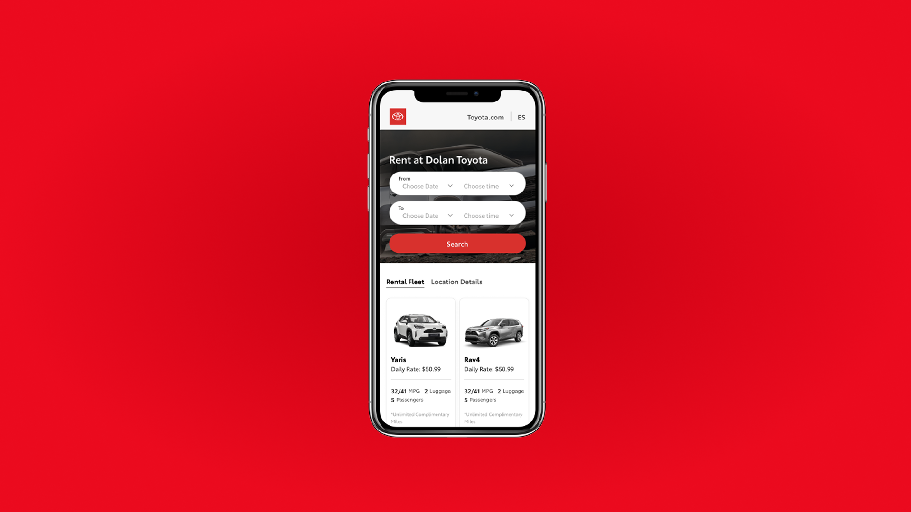
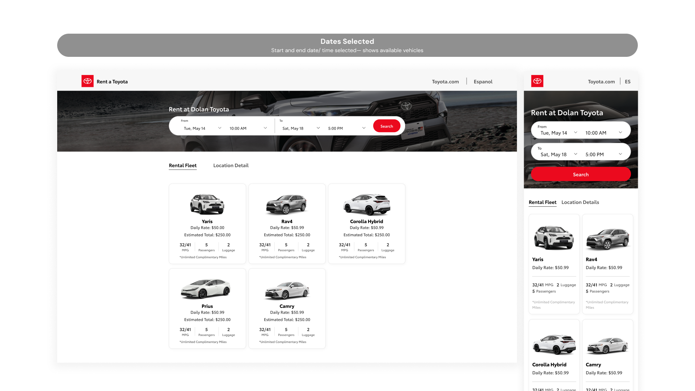
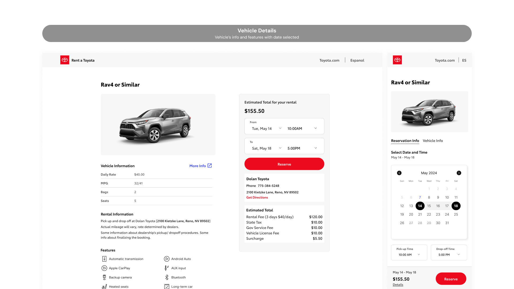
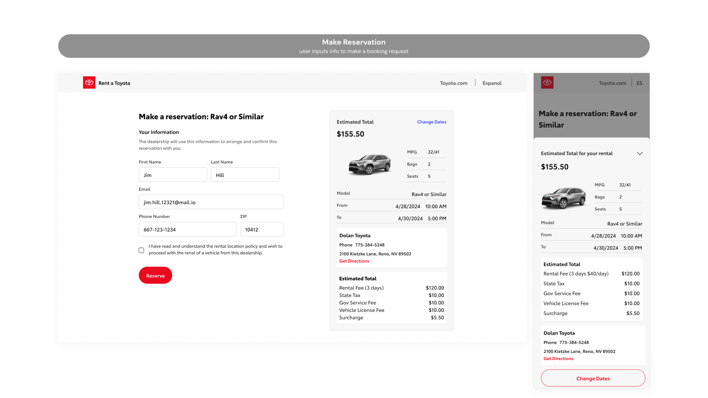

Toyota [2024]
Mobile car rental reservation system
A mobile-first UX design project for Dolan Toyota's car rental reservation system, completed during my co-op at Invoke in Summer 2024. The project covered the end-to-end reservation flow, from browsing available vehicles to confirming a booking, designed for customers on iOS and Android.

context
A desktop reservation flow already existed. My job was to bring it to mobile.
Toyota is a long-standing client of Invoke, a design and development agency where I completed my co-op in Summer 2024. Alongside the fleet management project, I worked on a separate engagement: the mobile version of a car rental reservation system for Dolan Toyota.
The desktop flow had already been designed. The team was small: a senior product designer, a project manager, and me handling the prototyping and UI work. My focus was adapting the existing experience for mobile, rethinking the layout and interactions to suit a smaller screen without losing any of the core functionality.
problem
The reservation system existed on desktop but had no mobile version. How might we adapt the existing flow into an experience that feels native on a phone?
The desktop design worked well in its context, but translating it directly to mobile would not. A smaller screen, touch-based interaction, and different usage patterns all required rethinking how the flow was structured and how information was presented at each step.
process
Translating desktop to mobile
The desktop flow served as the starting point, but translating it directly to mobile wasn't straightforward. The main landing screen combined a full hero image with an overlaid search bar, date and time pickers laid out horizontally in a single row, and a 3-column vehicle grid below. On mobile, the hero was condensed, the pickers stacked into two rows, and the grid shifted from 3 columns to 2.

The vehicle detail screen presented a bigger challenge. On desktop, vehicle information and the booking summary panel sat side by side in two columns. On mobile, that split had to collapse into a single vertical stack, with a sticky bar at the bottom showing the estimated total and a Reserve button so the primary action was always reachable. The date picker, which was a simple dropdown on desktop, became a full inline calendar on mobile to give users a clearer sense of availability without leaving the screen.

The customer info and confirmation screens followed the same logic. On desktop, the form sits on the left with the full estimated total breakdown panel always visible on the right. On mobile, that persistent panel disappears. Instead, a sticky bar at the bottom shows just the total and a Reserve button, with a "Details" link that slides up the full breakdown as a sheet when tapped. The information is all still there, just revealed on demand rather than always occupying half the screen.

Prototyping and iteration
The prototype was built in Figma covering the core reservation flow from start to finish. Iterations were based on internal feedback and client reviews, focusing on reducing friction at each step of the booking process.
outcome
A fully adapted mobile reservation flow across 8 screens, delivered within a 2-week sprint.
The desktop flow was successfully translated into a mobile experience across all key screens: the landing page, vehicle selection, vehicle detail, customer info, and booking confirmation. Each screen was rethought for mobile rather than simply resized, with layouts, interactions, and information hierarchy adjusted to suit how people actually use their phones.
reflections
Designing within constraints
Having an existing desktop flow to reference made the project more focused, but it also meant every decision had to be deliberate. It wasn't about creating something new; it was about understanding what the desktop design was doing and finding the right mobile equivalent. That kind of constraint pushed me to think more carefully about layout and hierarchy than I might have otherwise.
Progressive disclosure on mobile
The biggest takeaway was learning when to hide information and when to surface it. On desktop, showing everything at once works because there's room for it. On mobile, the same approach creates clutter. Patterns like the slide-up details sheet taught me that progressive disclosure isn't just a nice-to-have on mobile; it's often the only way to keep a screen usable.